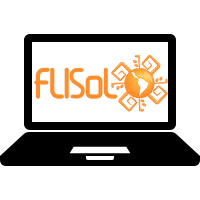

Bienvenidos!
El FLISoL es el evento de difusión de Software Libre más grande en Latinoamérica y está dirigido a todo tipo de público: estudiantes, académicos, empresarios, trabajadores, funcionarios públicos, entusiastas y aun personas que no poseen mucho conocimiento informático..
El FLISoL se realiza desde el año 2005 y desde el 2008 se adoptó su realización el 4to Sábado de abril de cada año. La entrada es gratuita y su principal objetivo es promover el uso del software libre, dando a conocer al público en general su filosofía, alcances, avances y desarrollo.
El Festival Latinoamericano de Instalación de Software Libre es un evento que se realiza simultáneamente en más de 200 ciudades de Latinoamérica. Esta dirigido a todos los interesados en instalar Software Libre en sus computadoras y ofrece charlas que permiten acercar a las personas a la filosofía y los conceptos esenciales del Software y la Cultura Libre.
El evento es organizado por las diversas comunidades locales de Software Libre y se desarrolla simultáneamente con eventos en los que se instala, de manera gratuita y totalmente legal, software libre en las computadoras que llevan los asistentes.
Además, en forma paralela, se ofrecen charlas, ponencias y talleres, sobre temáticas locales, nacionales y latinoamericanas en torno al Software Libre, en toda su gama de expresiones: artística, académica, empresarial y social.
Bring your own Laptop!

INSCRIBITE!
Registrate en el siguiente enlace para nuestro proximo evento
AGENDA
¡Atención: Los horarios son aproximados!
| 9:45 | Acreditación & Bienvenida con Desayuno | |
|---|---|---|
| 10:00 | Presentación del FLISoL | |
| 10:10 | Desarrollo Comunitario Descargar | Martín Marqués |
| 10:50 | Routers Libres Descargar | Joaquin Cañete |
| 11:30 | Libertya ERP Opensoruce | Juan Manuel Martinez |
| 12:10 | Hackers y Samurais Descargar | Gustavo Courault |
| 12:40 | Recreo de 1 Hora & Almuerzo | |
| 13:40 | Hardware Liberado Descargar | Juan Carrique |
| 14:10 | GNU ETER/TICs una herramienta para radios libres Descargar | Jonatan Almaraz Funes |
| 14:35 | Modelo cooperativa para emprendimientos de base tecnológica Descargar | Carlos Mansur |
| 15:15 | Compartir conocimientos en entornos digitales Descargar | Fernando Marcos Pelillo |
| 15:55 | Recreo de 20 Minutos & Café | |
| 16:15 | Cazando Mitos del Software Descargar | Pablo Ferreyra |
| 16:45 | Cómo asesinar a tu novio, usando software libre. Proyección Corto: Les Quenelles Descargar | Ela Fernández & Juan Pablo Taulamet |
| 17:25 | Instrumental científico con Hardware Libre Descargar | Emiliano Lopez |
| 17:55 | Tecnicatura Universitaria en Software libre Descargar | Martín Bayo |
| 18:25 | Reglamentación de la Ley de Software Libre en la Provincia de Santa Fe: Una Experiencia Interminable... Más Info | Martin Morales |
| 19:00 | Cierre con Cerveza | |